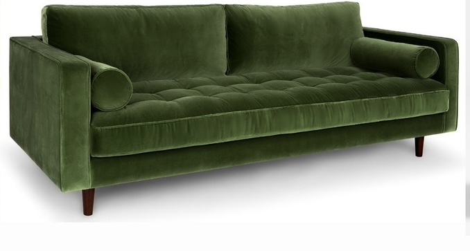
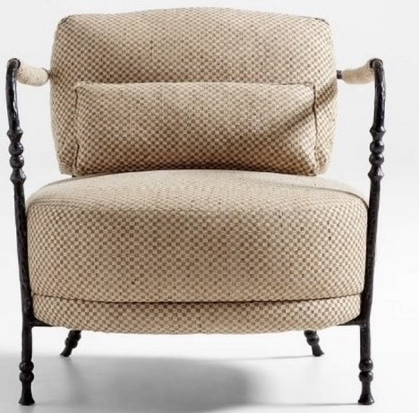
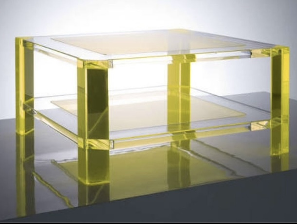
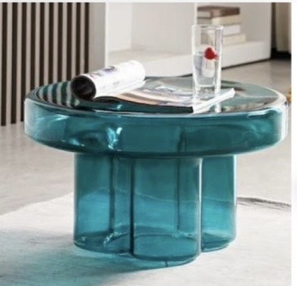
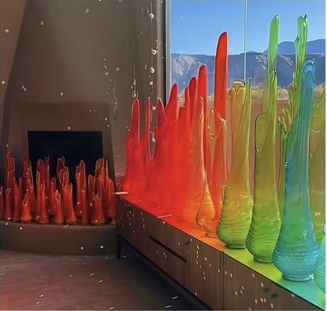
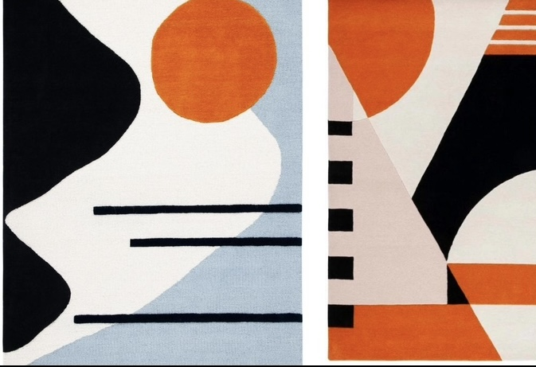
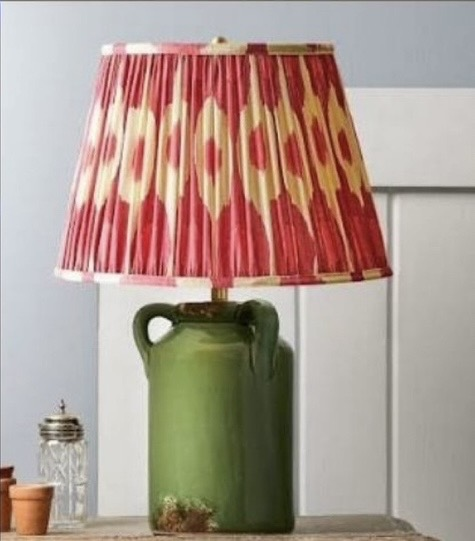
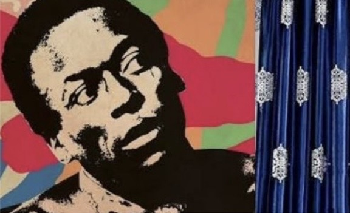
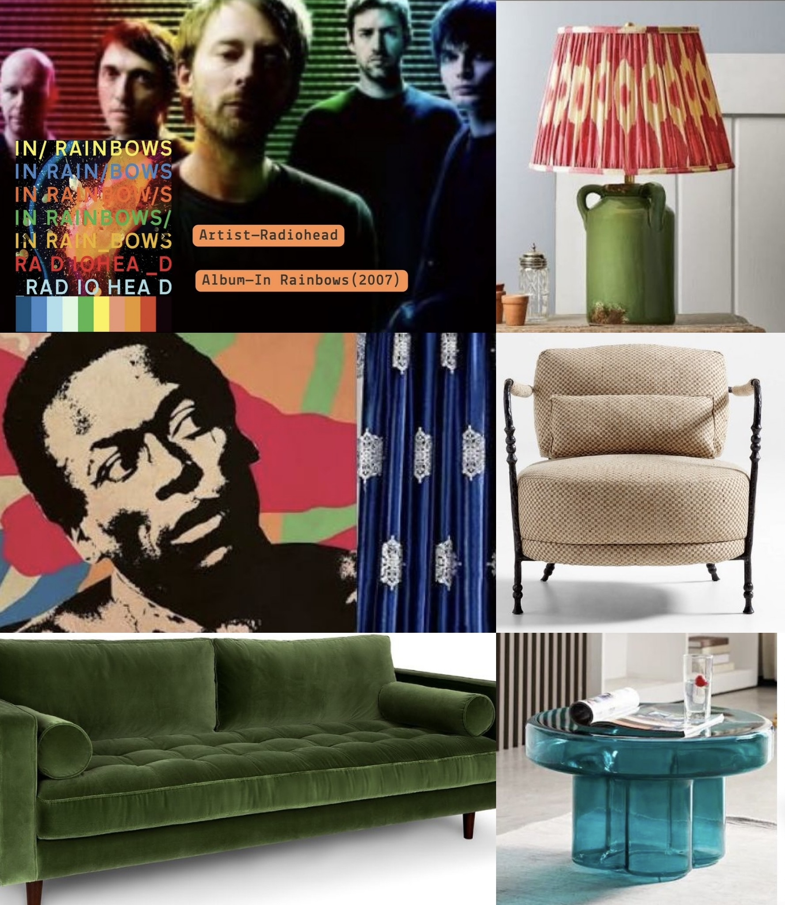

In Rainbows
Edward reached out to us and requested a living space mood board inspired by Radiohead's 2007 album In Rainbows.
With its explosion of color against a black backdrop, Stanley Donwood's album artwork gave us plenty to work with. For our interior interpretation, we wanted to explore the different ways color can exist within a space, from the richness of velvet to the beautiful effects of light passing through colored glass.
We anchored the room with Article's Sven sofa in Grass green, complemented by the Muirfield Sculptural Metal Accent Chair by Jake Arnold for Crate & Barrel. The chair's understated upholstery and beautifully detailed metal frame provide a nice counterbalance to some of our more colorful selections.


We had a little fun with our tables, incorporating Alexandra Von Furstenberg's translucent yellow Radiant acrylic coffee table alongside a sculptural turquoise Flower Glass Side Table. A collection of vintage swung glass vases arranged in a spectrum of colors would look absolutely stunning in a sun-drenched window, allowing the changing light to become part of the room's design.



We introduced pattern through abstract area rugs, rich blue embroidered curtains and the wonderfully eclectic Rufus table lamp from Pooky, with its green ceramic base and red patterned shade.


We also incorporated a colorful portrait of Nigerian musician and Afrobeat pioneer Fela Kuti, whose music helped inspire Atoms for Peace, Radiohead frontman Thom Yorke's side project.

The result is a living space that feels collected and comfortable, with moments of unexpected color and a little psychedelic flair. A room that takes on a personality of its own as the light changes throughout the day.
Thanks for the inspiration, Edward!

Let me know your thoughts. And if you'd like to see a room inspired by your favorite album, please reach out directly to I Spaced Out with suggestions.
Design Credits
- Album artwork: Stanley Donwood
- Record labels: XL Recordings and TBD Records
- Sven Sofa in Grass green: Article
- Muirfield Sculptural Metal Accent Chair by Jake Arnold: Crate & Barrel
- Area rugs: AllModern
- Rufus Table Lamp: Pooky
- Fela Kuti art print: Artist and original source unknown
- Vogel Embroidered Blackout Curtains: Amazon
- AVF Acrylic Lucite Radiant Coffee Table in yellow: Alexandra Von Furstenberg
- Flower Glass Side Table in turquoise: Bed Bath & Beyond
- Vintage swung glass vase collection: Original image source unknown